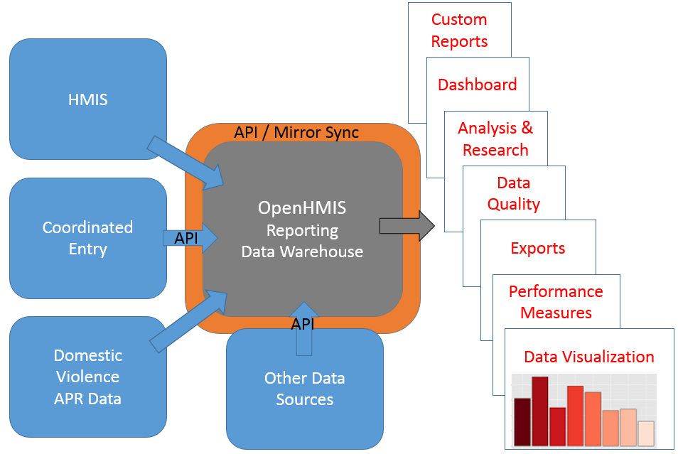

Our test server for the API is: hmis.opentechstrategies.com:8080. An example endpoint looks like this:
hmis.opentechstrategies.com:8080/openhmis/api/v3/clients
Of course, you can also set up your own server. The installation guide gives an idea of what's involved, and our OAuth flow documentation explains how to set up authentication and authorization for an instance of the server.
Further resources:
You can try it out using our demo client app at http://hmis.opentechstrategies.com:3000. Sign in with a Google email account and try searching for clients. (If you're making API calls from some other client, note you'll need to pass an HTTP Authorization header with each API request.) For now, anyone who authenticates to our server can make read-only requests. Please ask us if you would like authorization to make create/update/delete calls to this server.